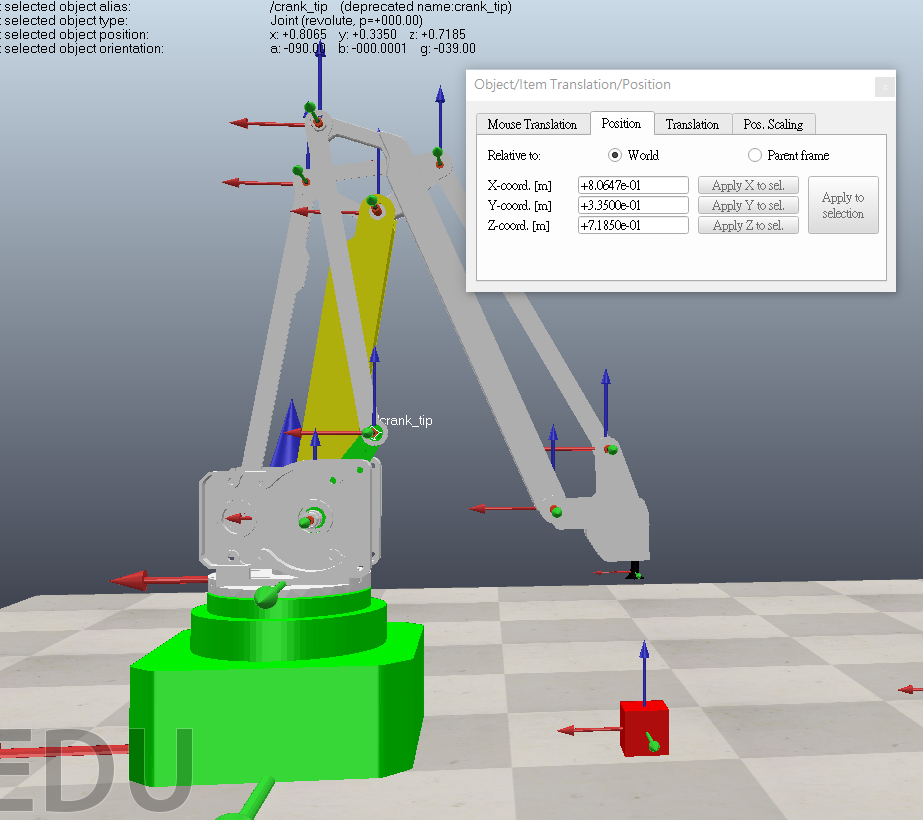
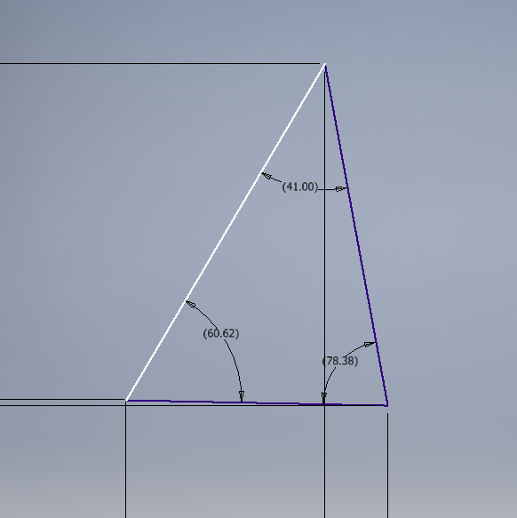
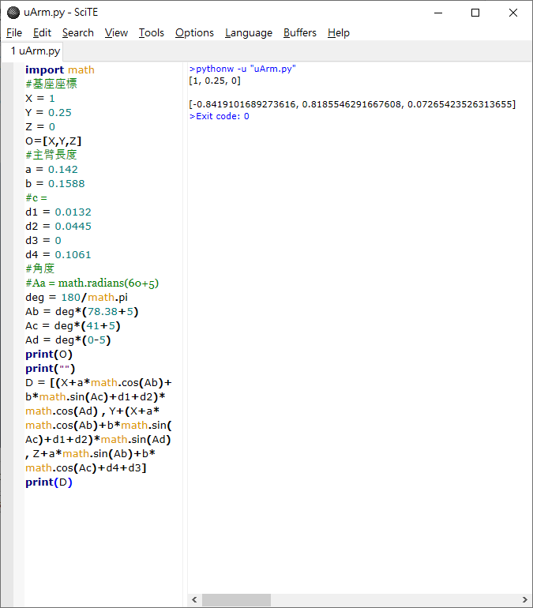

W13 <<
Previous W16
Online Exam
先設置數個代數並寫出從基座原點到吸盤頂點的計算式

用python寫出運算式並帶入相對應數值
import math
#基座座標
X = 1
Y = 0.25
Z = 0
O=[X,Y,Z]
#主臂長度
a = 0.142
b = 0.1588
#c =
d1 = 0.0132
d2 = 0.0445
d3 = 0
d4 = 0.1061
#角度
#Aa = math.radians(60+5)
deg = 180/math.pi
Ab = deg*(78.38+5)
Ac = deg*(41+5)
Ad = deg*(0-5)
print(O)
print("")
D = [(X+a*math.cos(Ab)+b*math.sin(Ac)+d1+d2)*math.cos(Ad) , Y+(X+a*math.cos(Ab)+b*math.sin(Ac)+d1+d2)*math.sin(Ad) , Z+a*math.sin(Ab)+b*math.cos(Ac)+d4+d3]
print(D)
由於不確定組裝好後的角度是多少於是用copilasim取得各點座標，並用inventor畫出來量取角度


計算各軸逆時鐘轉5度後的結果

W13 <<
Previous